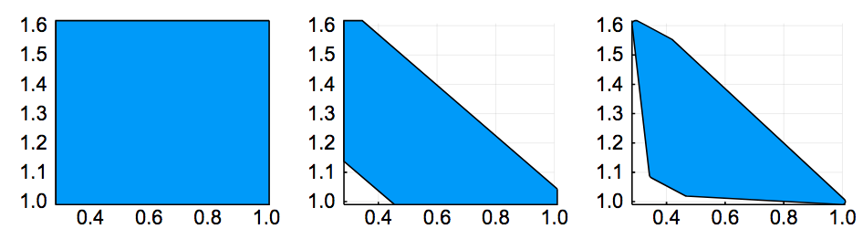

LazySets.jl
LazySets is a Julia package for calculus with convex sets.
The aim is to provide a scalable library for solving complex set-based problems, such as those encountered in differential inclusions or reachability analysis techniques in the domain of formal verification. Typically, one is confronted with a set-based recurrence with a given initial set and/or input sets, and for visualization purposes the final result has to be obtained through an adequate projection onto low-dimensions. This library implements types to construct set formulas and methods to efficiently and accurately approximate the projection in low-dimensions.
Introduction
In this package we describe convex sets lazily (i.e., symbolically). This way we provide an exact but abstract representation, in principle for any common convex set class or operation between sets. Concrete information is obtained through evaluating the set in specific directions. More precisely, each concrete subtype $\mathcal{X}$ of the abstract type LazySet exports a method to calculate its support vector $σ(d, \mathcal{X})$ in a given (arbitrary) direction $d \in \mathbb{R}^n$. Representing sets exactly but lazily has the advantage of being able to perform only the required operations on-demand.
For very long sequences of computations (e.g., set-based recurrences with tens of thousands of elements), it is useful to combine both lazy and concrete representations such as polyhedral approximations. All this is easy to do with LazySets. Moreover, we provide a specialized module for handling Cartesian decomposition of two-dimensional projections. The projection can be taken to the desired precision using an iterative refinement method.
Example
Let $\mathcal{X}_0 \subset \mathbb{R}^{1000}$ be the Euclidean ball of center $(1, \ldots, 1)$ and radius $0.1$ in dimension $n=1000$. Given a real matrix $A \in \mathbb{R}^{1000 \times 1000}$, suppose that we are interested in the equation
where $CH$ is the convex hull operator, $⊕$ denotes Minkowski sum, $\mathcal{U}$ is a ball in the infinity norm centered at zero and radius $1.2$, and $B$ is a linear map of the appropriate dimensions. This equation typically arises in the study of discrete approximation models for reachability of continuous systems, see for example SpaceEx: Scalable verification of hybrid systems.
For concreteness, we take $A$ to be a random matrix with probability $1\%$ of any entry being nonzero. Suppose that the input set $\mathcal{U}$ is two-dimensional, and that the linear map $B$ is random. Finally, let δ = 0.1. Using LazySets, we can define this problem as follows:
julia> using LazySets, SparseArrays, LinearAlgebra
julia> A = sprandn(1000, 1000, 0.01);
julia> δ = 0.1;
julia> X0 = Ball2(ones(1000), 0.1);
julia> B = randn(1000, 2);
julia> U = BallInf(zeros(2), 1.2);
The @time macro shows that building $\mathcal{Y}$ with LazySets is instantaneous.
julia> using Expokit
julia> Y = CH(SparseMatrixExp(A * δ) * X0 + δ * B * U, X0);By asking for the concrete type of Y, we see that it has a convex hull type, parameterized by the types of its arguments, corresponding to the mathematical formulation:
julia> typeof(Y)
ConvexHull{Float64,MinkowskiSum{Float64,ExponentialMap{Float64,Ball2{Float64}},LinearMap{Float64,BallInf{Float64},Float64,Array{Float64,2}}},Ball2{Float64}}Now suppose that we are interested in observing the projection of $\mathcal{Y}$ onto the variables number 1 and 500. First we define the $2×1000$ projection matrix and apply it to $\mathcal{Y}$ as a linear map (i.e., from the left). Second, we use the overapproximate method:
julia> proj_mat = [[1. zeros(1, 999)]; [zeros(1, 499) 1. zeros(1, 500)]];
julia> res = Approximations.overapproximate(proj_mat * Y);We have calculated a box overapproximation of the exact projection onto the $(x_1, x_{500})$ plane. Notice that it takes about 0.064 seconds for the whole operation, allocating less than 10MB of RAM. Let us note that if the set operations were done explicitly, this would be much (!) slower. For instance, already the explicit computation of the matrix exponential would have cost 10x more, and allocated around 300MB. For even higher $n$, an evaluation will probably run out of RAM. But this is doable with LazySets because the action of the matrix exponential on the set is only evaluated along the directions of interest. Similar comments apply to the Minkowski sum above.
We can visualize the result using plot, as shown below (left-most plot).

In the second and third plots, we have used a refined method that allows to specify a prescribed accuracy for the projection (in terms of the Hausdorff distance). For the theoretical background, see this reference. It can be passed as a second argument to overapproximate.
| Error tol. | time (s) | memory (MB) |
|---|---|---|
| ∞ (no refinement) | 0.022 | 5.27 |
| 1e-1 | 0.051 | 7.91 |
| 1e-3 | 0.17 | 30.3 |
This table shows the runtime and memory consumption for different error tolerances, and the results are shown in three plots of above, from left to right. When passing to a smaller tolerance, the corners connecting edges are more "rounded", at the expense of computational resources, since more support vectors have to be evaluated.
Features
The core functionality of LazySets is:
- Lazy (i.e., symbolic) types for several classes of convex sets such as balls in different norms, polygons in constraint or vertex representation, zonotopes, special types such as lines and linear constraints, hyperrectangles, and high-dimensional polyhedra.
- Lazy implementations for most commonly used set operations, e.g., Minkowski sum, Cartesian product, convex hull and interval hull approximations, and linear and exponential maps.
On top of the previous basic type representations and operations, LazySets can be used to:
- Efficiently evaluate the support vector of nested lazy sets.
- Cartesian decomposition of lazy sets using two-dimensional projections.
- Fast overapproximation of an exact set using a polyhedral approximation, to the desired accuracy.
- Extensive visualization capabilities through the Plots.jl framework.
Manual Outline
- Getting Started
- Polyhedral Approximations
- Decomposing an Affine Map
- Preliminaries: Polygon, Linear Map, and Plotting
- Cartesian Decomposition
- Decomposed Image of a Linear Map
- Fast 2D LPs
- Iterative Refinement
- Interval Hulls
- Balls and Singletons
- Ballinf approximation
- Interval hull approximation
- Symmetric interval hull
- Norm, radius and diameter
- Convex Hulls
- Symbolic convex hull
- 2D convex hull
- Test point in convex hull
- Using static vectors
- Higher-dimensional convex hull
- Operations on sets
- A Reachability Algorithm Using Zonotopes
- A Hybrid Reachability Algorithm Using Zonotopes
- Concrete Polyhedra
- Parallel Approximations
- Lazy Intersections
Library Outline
- Set Interfaces
- General sets (LazySet)
- Centrally symmetric sets (AbstractCentrallySymmetric)
- Polyhedra (AbstractPolyhedron)
- Polytopes (AbstractPolytope)
- Polygons (AbstractPolygon)
- Polygons in constraint representation (AbstractHPolygon)
- Centrally symmetric polytopes (AbstractCentrallySymmetricPolytope)
- Zonotopes (AbstractZonotope)
- Hyperrectangles (AbstractHyperrectangle)
- Singletons (AbstractSingleton)
- Hyperrectangle
- Infinity-norm ball (BallInf)
- Interval
- Singleton
- Origin (ZeroSet)
- Half-space (HalfSpace)
- Polyhedron in constraint representation (HPolyhedron)
- Hyperplane
- Line
- Universe
- Polytope in constraint representation (HPolytope)
- Polytope in vertex representation (VPolytope)
- Polygon in constraint representation (HPolygon)
- Polygon in optimized constraint representation (HPolygonOpt)
- Polygon in vertex representation (VPolygon)
- Zonotope
- Line segment (LineSegment)
- Manhattan-norm ball (Ball1)
- Empty set (EmptySet)
- Euclidean-norm ball (Ball2)
- Ellipsoid
- p-norm ball (Ballp)
- Polynomial zonotope (PolynomialZonotope)
- Bloating
- Cartesian product
- Convex hull
- Intersection
- Minkowski sum
- Binary Minkowski sum (MinkowskiSum)
- $n$-ary Minkowski sum (MinkowskiSumArray)
- $n$-ary Minkowski sum with cache (CacheMinkowskiSum)
- Linear map (LinearMap)
- Exponential map
- Reset map (ResetMap)
- Translation
- Affine map (AffineMap)
- Symmetric interval hull (SymmetricIntervalHull)
- Union
- Complement
- Rectification
- Comparisons
- Conversion between set representations
- Binary Functions on Sets
- Cartesian product
- Check for emptiness of intersection
- Convex hull
- Intersection of two sets
- Minkowski sum
- Minkowski difference
- Subset check
- Set difference
- Approximations
- Cartesian Decomposition
- Overapproximations
- Underapproximations
- Box Approximations
- Iterative refinement
- Template directions
- Hausdorff distance
- Utility functions
- Parallel